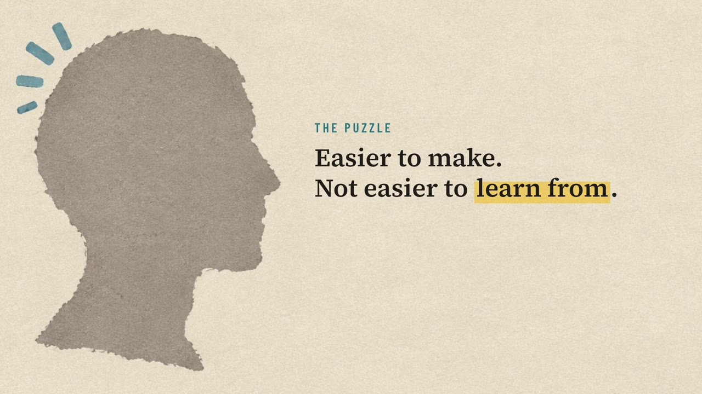
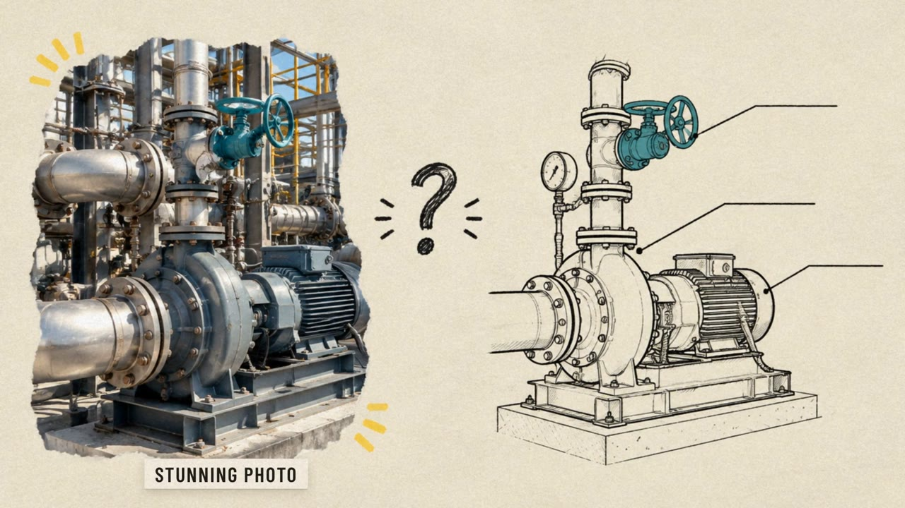

Course Content & Experiments
Finished lessons built for my M.S. IDT courses, plus a sandbox for testing new tools in content, design, and development.
Lessons Built for My Courses
Narrated lessons designed and produced for courses in the Georgia State University M.S. Instructional Design & Technology program, grouped by course.
LT 7100 · Instructional Design

LT 7100A 4-minute explainer on choosing media by the cognitive work it does for the learner, grounded in Mayer's multimedia principles, with guidance on creating media with AI in the room.

LT 7100The companion video: what alignment means, three signs that media only looks aligned, and how to check media against the objective and its performance conditions.
LT 8150 · Project Management for Instructional Designers
LT 8360 · Rethinking eLearning
AI-Assisted Video
Short pieces and tool tests built with code-driven motion graphics, generative video, and AI-assisted audio and music.
A 105-second story about weaving AI-assisted instructional design into the M.S. IDT curriculum, including responsible, ethical, and self-reported AI use.
A 33-second graphite-pencil animation of a Lake Tahoe road trip in a VW Westfalia, made entirely with AI (Nano Banana Pro, Seedance 2.5 on Higgsfield, Epidemic Sound). Vertical version